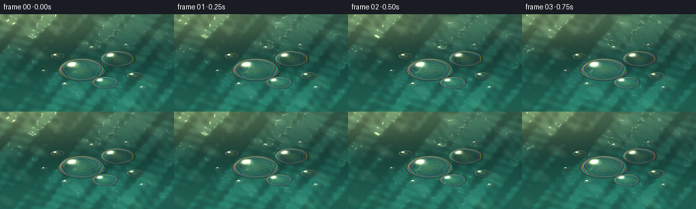
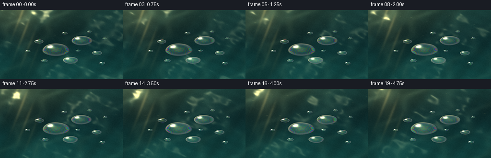
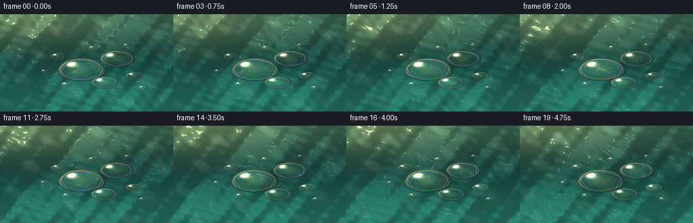
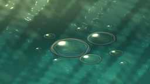
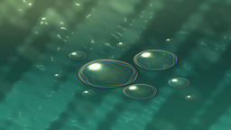
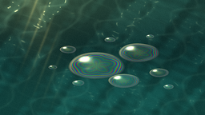
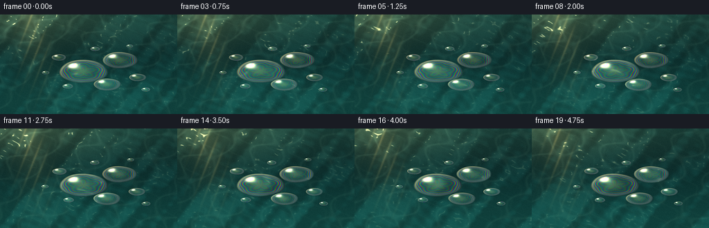
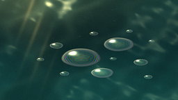
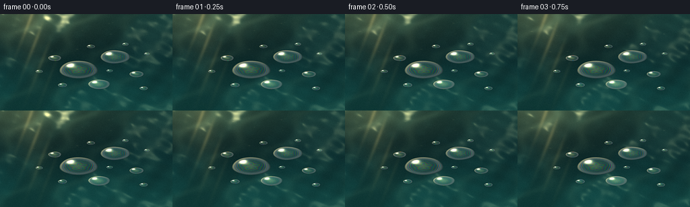
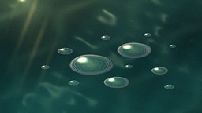

CODING AGENTS AS PIXEL WORLD MODELS
traex/DeepSeek-V4.1-Flash · phygen_077
点击播放 · 原生 RGB 像素
逐轮保存的候选
回放视频、检查图与代码变化。
每份候选均可单独播放。实际图片检查记录在下方工具轨迹中。
候选 01播放与检查图
点击播放 · 原生 RGB 像素


展开代码变化
--- 上一保存版本
+++ 本次保存版本
@@ -0,0 +1,309 @@
+from pathlib import Path
+
+import numpy as np
+from PIL import Image, ImageFilter
+
+import artifact_io
+
+
+CASE_DIR = Path(__file__).resolve().parent
+WIDTH = 256
+HEIGHT = 144
+N_FRAMES = 20
+FPS = 4.0
+SS = 4
+RW = WIDTH * SS
+RH = HEIGHT * SS
+
+
+def smoothstep(edge0, edge1, x):
+ t = np.clip((x - edge0) / (edge1 - edge0), 0.0, 1.0)
+ return t * t * (3.0 - 2.0 * t)
+
+
+def normalize(v):
+ return v / np.maximum(np.linalg.norm(v, axis=2, keepdims=True), 1e-6)
+
+
+def bilinear(image, px, py):
+ h, w = image.shape[:2]
+ px = np.clip(px, 0, w - 1.001)
+ py = np.clip(py, 0, h - 1.001)
+ x0 = np.floor(px).astype(np.int32)
+ y0 = np.floor(py).astype(np.int32)
+ x1 = np.minimum(x0 + 1, w - 1)
+ y1 = np.minimum(y0 + 1, h - 1)
+ fx = px - x0
+ fy = py - y0
+ if image.ndim == 3:
+ fx = fx[..., None]
+ fy = fy[..., None]
+ top = image[y0, x0] * (1.0 - fx) + image[y0, x1] * fx
+ bottom = image[y1, x0] * (1.0 - fx) + image[y1, x1] * fx
+ return top * (1.0 - fy) + bottom * fy
+
+
+def make_water(t, frame_index):
+ y, x = np.mgrid[0:RH, 0:RW].astype(np.float32)
+ xn = x / (RW - 1)
+ yn = y / (RH - 1)
+ aspect = WIDTH / HEIGHT
+
+ drift_x = 0.0055 * np.sin(t * 1.7)
+ drift_y = 0.0035 * np.cos(t * 1.25)
+ zoom = 1.0 + 0.018 * t
+ wx = (xn - 0.5) / zoom + 0.5 + drift_x
+ wy = (yn - 0.5) / zoom + 0.5 + drift_y
+
+ # Large, slow undulations establish the water surface.
+ height = np.zeros_like(wx)
+ dx = np.zeros_like(wx)
+ dy = np.zeros_like(wx)
+ waves = (
+ (1.1, 0.45, 0.0100, 0.2, 0.45),
+ (-0.7, 1.6, 0.0065, 1.1, -0.38),
+ (2.1, 1.1, 0.0042, 2.3, 0.62),
+ (3.4, -1.7, 0.0025, 0.8, -0.78),
+ (5.2, 3.1, 0.0017, 2.7, 0.95),
+ )
+ for fx, fy, amp, phase, speed in waves:
+ arg = 2.0 * np.pi * (fx * wx + fy * wy) + phase + speed * t
+ height += amp * np.sin(arg)
+ dx += amp * 2.0 * np.pi * fx * np.cos(arg)
+ dy += amp * 2.0 * np.pi * fy * np.cos(arg)
+
+ # Fine capillary texture catches the sunlight.
+ fine = (
+ (10.0, 4.0, 0.00075, 0.4, 1.4),
+ (-6.0, 12.0, 0.00055, 2.1, -1.7),
+ (16.0, -7.0, 0.00035, 1.2, 2.2),
+ )
+ for fx, fy, amp, phase, speed in fine:
+ arg = 2.0 * np.pi * (fx * wx + fy * wy) + phase + speed * t
+ height += amp * np.sin(arg)
+ dx += amp * 2.0 * np.pi * fx * np.cos(arg)
+ dy += amp * 2.0 * np.pi * fy * np.cos(arg)
+
+ normal = normalize(np.stack((-dx * 10.5, -dy * 10.5, np.ones_like(height)), axis=2))
+ light = np.array([-0.54, -0.64, 0.55], dtype=np.float32)
+ light = light / np.linalg.norm(light)
+ view = np.array([0.0, 0.0, 1.0], dtype=np.float32)
+ half = light + view
+ half = half / np.linalg.norm(half)
+ diffuse = np.clip(np.sum(normal * light, axis=2), 0.0, 1.0)
+ sun_spec = np.power(np.clip(np.sum(normal * half, axis=2), 0.0, 1.0), 150.0)
+
+ deep = np.array([0.055, 0.215, 0.205], dtype=np.float32)
+ mid = np.array([0.15, 0.46, 0.39], dtype=np.float32)
+ surface = np.array([0.43, 0.64, 0.48], dtype=np.float32)
+ lower_mix = smoothstep(0.18, 0.95, wy)
+ color = deep[None, None, :] * (1.0 - lower_mix[..., None]) + mid[None, None, :] * lower_mix[..., None]
+ top_mix = np.exp(-((wy - 0.02) / 0.34) ** 2)[..., None]
+ color = color * (1.0 - 0.45 * top_mix) + surface[None, None, :] * (0.45 * top_mix)
+
+ # Warm low sunlight, concentrated toward the upper-left.
+ sun_dist = ((wx - 0.11) * 1.15) ** 2 + ((wy + 0.03) * 1.55) ** 2
+ sun_glow = np.exp(-sun_dist / 0.30)
+ warm = np.array([1.0, 0.73, 0.34], dtype=np.float32)
+ color += warm[None, None, :] * (0.22 * sun_glow[..., None])
+ color *= (0.80 + 0.34 * diffuse[..., None])
+
+ # Interfering wave trains create a loose, organic caustic web.
+ c1 = np.sin(2.0 * np.pi * (2.7 * wx + 1.2 * wy + 0.035 * t) + 0.7)
+ c2 = np.sin(2.0 * np.pi * (-1.4 * wx + 3.2 * wy - 0.028 * t) + 1.8)
+ c3 = np.sin(2.0 * np.pi * (4.3 * wx - 2.6 * wy + 0.047 * t) + 2.6)
+ web = (c1 * c2 + c2 * c3 + c3 * c1) / 3.0
+ caustic = smoothstep(0.08, 0.84, web)
+ caustic *= 0.30 + 0.70 * sun_glow
+ caustic_color = np.array([0.82, 0.92, 0.66], dtype=np.float32)
+ color += caustic_color[None, None, :] * (0.16 * caustic[..., None])
+
+ glint = sun_spec * (0.12 + 0.88 * sun_glow)
+ color += np.array([1.0, 0.88, 0.59], dtype=np.float32)[None, None, :] * (0.92 * glint[..., None])
+
+ # A few soft distant sparkles give the upper water plane depth.
+ rng = np.random.default_rng(107)
+ for _ in range(18):
+ gx = rng.uniform(0.02, 0.98)
+ gy = rng.uniform(0.02, 0.42)
+ radius = rng.uniform(0.004, 0.013)
+ pulse = 0.35 + 0.65 * (0.5 + 0.5 * np.sin(t * rng.uniform(2.0, 4.0) + rng.uniform(0, 6.3)))
+ spot = np.exp(-(((wx - gx) / radius) ** 2 + ((wy - gy) / (radius * 0.55)) ** 2) * 2.0)
+ color += np.array([0.95, 0.79, 0.48], dtype=np.float32)[None, None, :] * (0.10 * pulse * spot[..., None])
+
+ color = np.clip(color, 0.0, 1.0)
+
+ # Defocus the far water slightly while keeping the droplet plane crisp.
+ blur_w = (0.52 * smoothstep(0.56, 0.02, wy))[..., None]
+ blurred = np.asarray(
+ Image.fromarray(np.uint8(np.clip(color, 0, 1) * 255)).filter(ImageFilter.GaussianBlur(2.2)),
+ dtype=np.float32,
+ ) / 255.0
+ color = color * (1.0 - blur_w) + blurred * blur_w
+ return color
+
+
+DROPLETS = (
+ # cx, cy, radius x, radius y, phase, warmth
+ (0.47, 0.57, 0.138, 0.118, 0.2, 0.18),
+ (0.675, 0.46, 0.100, 0.084, 1.7, 0.10),
+ (0.605, 0.705, 0.078, 0.063, 3.1, 0.16),
+ (0.335, 0.43, 0.042, 0.034, 4.2, 0.22),
+ (0.385, 0.72, 0.031, 0.025, 5.3, 0.10),
+ (0.775, 0.635, 0.049, 0.039, 2.4, 0.18),
+ (0.535, 0.345, 0.028, 0.022, 0.9, 0.12),
+ (0.735, 0.315, 0.021, 0.017, 4.8, 0.18),
+ (0.825, 0.755, 0.026, 0.021, 3.7, 0.12),
+ (0.255, 0.585, 0.022, 0.018, 1.2, 0.16),
+)
+
+
+def add_soft_shadow(canvas, cx, cy, rx, ry, t):
+ x0 = max(0, int((cx + rx * 0.12 - rx * 1.18) * RW))
+ x1 = min(RW, int((cx + rx * 0.12 + rx * 1.18) * RW) + 1)
+ y0 = max(0, int((cy + ry * 0.16 - ry * 1.18) * RH))
+ y1 = min(RH, int((cy + ry * 0.16 + ry * 1.18) * RH) + 1)
+ if x1 <= x0 or y1 <= y0:
+ return
+ yy, xx = np.mgrid[y0:y1, x0:x1].astype(np.float32)
+ xn = xx / (RW - 1)
+ yn = yy / (RH - 1)
+ u = (xn - cx - rx * 0.10) / (rx * 1.02)
+ v = (yn - cy - ry * 0.12) / (ry * 1.02)
+ shadow = np.exp(-(u * u + v * v) * 2.2)
+ shadow *= 0.17 + 0.015 * np.sin(t * 2.0)
+ canvas[y0:y1, x0:x1] *= (1.0 - shadow[..., None])
+
+
+def draw_droplet(canvas, cx, cy, rx, ry, phase, warmth, t, background):
+ x0 = max(0, int((cx - rx * 1.10) * RW))
+ x1 = min(RW, int((cx + rx * 1.10) * RW) + 1)
+ y0 = max(0, int((cy - ry * 1.10) * RH))
+ y1 = min(RH, int((cy + ry * 1.10) * RH) + 1)
+ if x1 <= x0 or y1 <= y0:
+ return
+
+ yy, xx = np.mgrid[y0:y1, x0:x1].astype(np.float32)
+ xn = xx / (RW - 1)
+ yn = yy / (RH - 1)
+ u = (xn - cx) / rx
+ v = (yn - cy) / ry
+ angle = np.arctan2(v, u)
+ boundary = 1.0 + 0.017 * np.sin(3.0 * angle + phase + 0.2 * t)
+ boundary += 0.009 * np.sin(5.0 * angle - 0.7 * phase - 0.15 * t)
+ rnorm = np.sqrt(u * u + v * v) / boundary
+ edge_px = 2.2 / (rx * RW)
+ mask = 1.0 - smoothstep(1.0 - edge_px, 1.0, rnorm)
+ inside = mask > 0.001
+ if not np.any(inside):
+ return
+
+ safe_r = np.clip(rnorm, 0.0, 0.999)
+ theta = np.arctan2(v, u)
+ # A convex oil lens compresses the source scene toward the center.
+ source_radius = 0.66 * safe_r ** 1.35 + 0.05 * safe_r ** 4
+ su = cx + np.cos(theta) * source_radius * rx * 0.94
+ sv = cy + np.sin(theta) * source_radius * ry * 0.94 + 0.006 * ry
+ refracted = bilinear(background, su * (RW - 1), sv * (RH - 1))
+
+ # Slight chromatic displacement reads as a real refracting lens.
+ red = bilinear(background, (su + 0.0012 * np.cos(theta)) * (RW - 1), (sv + 0.0007 * np.sin(theta)) * (RH - 1))
+ blue = bilinear(background, (su - 0.0012 * np.cos(theta)) * (RW - 1), (sv - 0.0007 * np.sin(theta)) * (RH - 1))
+ refracted[..., 0] = refracted[..., 0] * 0.78 + red[..., 0] * 0.22
+ refracted[..., 2] = refracted[..., 2] * 0.78 + blue[..., 2] * 0.22
+
+ r2 = np.clip(safe_r * safe_r, 0.0, 1.0)
+ z = np.sqrt(np.maximum(1.0 - r2, 0.0))
+ normal = normalize(np.stack((u * 0.72, v * 0.72, z + 0.16), axis=2))
+ light = np.array([-0.54, -0.64, 0.55], dtype=np.float32)
+ light = light / np.linalg.norm(light)
+ diffuse = np.clip(np.sum(normal * light, axis=2), 0.0, 1.0)
+ shade = 0.86 + 0.24 * diffuse
+ refracted *= shade[..., None]
+
+ # Thin-film interference is strongest at the sloping perimeter.
+ film_phase = 0.28 + 4.8 * (1.0 - z) + 0.40 * np.sin(5.0 * theta + phase) + 0.10 * t
+ film = np.stack(
+ (
+ 0.5 + 0.5 * np.cos(2.0 * np.pi * film_phase),
+ 0.5 + 0.5 * np.cos(2.0 * np.pi * (film_phase + 0.31)),
+ 0.5 + 0.5 * np.cos(2.0 * np.pi * (film_phase + 0.64)),
+ ),
+ axis=2,
+ )
+ rim = np.exp(-((safe_r - 0.87) / 0.105) ** 2)
+ film_strength = 0.30 * rim + 0.055
+ refracted = refracted * (1.0 - film_strength[..., None]) + film * film_strength[..., None]
+
+ # Dark refractive rim, then a warm reflected edge on the sun side.
+ dark_rim = np.exp(-((safe_r - 0.975) / 0.040) ** 2)
+ refracted *= (1.0 - 0.34 * dark_rim[..., None])
+ warm_edge = np.exp(-((safe_r - 0.925) / 0.055) ** 2)
+ warm_edge *= np.clip((-u * 0.62 - v * 0.78 + 0.25), 0.0, 1.0)
+ refracted += np.array([1.0, 0.72, 0.34], dtype=np.float32)[None, None, :] * (0.24 * warm_edge[..., None])
+
+ # Two-lobe highlight: a sharp sun catchlight and a softer sky reflection.
+ half = light + np.array([0.0, 0.0, 1.0], dtype=np.float32)
+ half = half / np.linalg.norm(half)
+ spec = np.power(np.clip(np.sum(normal * half, axis=2), 0.0, 1.0), 105.0)
+ broad = np.exp(-(((u + 0.38) / 0.23) ** 2 + ((v + 0.36) / 0.17) ** 2))
+ broad *= np.clip(z, 0.0, 1.0) ** 2
+ highlight = np.clip(1.22 * spec + 0.38 * broad, 0.0, 1.4)
+ highlight_color = np.array([1.0, 0.93, 0.72], dtype=np.float32)
+ refracted += highlight_color[None, None, :] * highlight[..., None]
+
+ # A tiny warm center caustic makes the lens feel transparent, not painted.
+ center_caustic = np.exp(-((u + 0.08) ** 2 + (v + 0.02) ** 2) / 0.19)
+ refracted += np.array([0.26, 0.22, 0.07], dtype=np.float32)[None, None, :] * (center_caustic[..., None] * (0.25 + warmth))
+
+ refracted = np.clip(refracted, 0.0, 1.0)
+ region = canvas[y0:y1, x0:x1]
+ region[:] = region * (1.0 - mask[..., None]) + refracted * mask[..., None]
+
+
+def render_frame(frame_index):
+ t = frame_index / FPS
+ background = make_water(t, frame_index)
+ canvas = background.copy()
+
+ animated = []
+ for index, (cx, cy, rx, ry, phase, warmth) in enumerate(DROPLETS):
+ px = cx + 0.0026 * np.sin(t * 0.92 + phase) + 0.00012 * t
+ py = cy + 0.0019 * np.cos(t * 0.77 + phase * 1.3)
+ prx = rx * (1.0 + 0.008 * np.sin(t * 1.1 + phase))
+ pry = ry * (1.0 + 0.010 * np.cos(t * 0.95 + phase))
+ animated.append((py, index, px, py, prx, pry, phase, warmth))
+
+ for _, _, px, py, prx, pry, phase, warmth in sorted(animated):
+ add_soft_shadow(canvas, px, py, prx, pry, t)
+
+ for _, _, px, py, prx, pry, phase, warmth in sorted(animated):
+ draw_droplet(canvas, px, py, prx, pry, phase, warmth, t, background)
+
+ # Gentle bloom around the strongest sun glints.
+ luminance = np.max(canvas, axis=2)
+ bright = np.clip((luminance - 0.74) / 0.26, 0.0, 1.0)
+ bloom_source = np.uint8(np.clip(bright * 255.0, 0, 255))
+ bloom = np.asarray(Image.fromarray(bloom_source).filter(ImageFilter.GaussianBlur(4.5)), dtype=np.float32) / 255.0
+ canvas += np.array([0.32, 0.24, 0.11], dtype=np.float32)[None, None, :] * bloom[..., None]
+ canvas = np.clip(canvas, 0.0, 1.0)
+
+ image = Image.fromarray(np.uint8(canvas * 255.0)).resize((WIDTH, HEIGHT), Image.Resampling.LANCZOS)
+ image = image.filter(ImageFilter.UnsharpMask(radius=0.75, percent=38, threshold=3))
+ frame = np.asarray(image, dtype=np.float32) / 255.0
+
+ # Very light sensor grain prevents smooth gradients from banding.
+ rng = np.random.default_rng(9000 + frame_index)
+ grain = rng.normal(0.0, 0.0045, (HEIGHT, WIDTH, 1)).astype(np.float32)
+ frame = np.clip(frame + grain, 0.0, 1.0)
+ return np.uint8(frame * 255.0 + 0.5)
+
+
+def main():
+ frames = np.stack([render_frame(index) for index in range(N_FRAMES)], axis=0)
+ artifact_io.save(frames, CASE_DIR)
+ print(f"Saved {len(frames)} frames to {CASE_DIR}")
+
+
+if __name__ == "__main__":
+ main()
候选 02播放与检查图
点击播放 · 原生 RGB 像素

展开代码变化
--- 上一保存版本
+++ 本次保存版本
@@ -93,30 +93,39 @@
diffuse = np.clip(np.sum(normal * light, axis=2), 0.0, 1.0)
sun_spec = np.power(np.clip(np.sum(normal * half, axis=2), 0.0, 1.0), 150.0)
- deep = np.array([0.055, 0.215, 0.205], dtype=np.float32)
- mid = np.array([0.15, 0.46, 0.39], dtype=np.float32)
- surface = np.array([0.43, 0.64, 0.48], dtype=np.float32)
- lower_mix = smoothstep(0.18, 0.95, wy)
+ deep = np.array([0.025, 0.125, 0.135], dtype=np.float32)
+ mid = np.array([0.075, 0.305, 0.285], dtype=np.float32)
+ surface = np.array([0.24, 0.51, 0.42], dtype=np.float32)
+ lower_mix = smoothstep(0.10, 0.92, wy)
color = deep[None, None, :] * (1.0 - lower_mix[..., None]) + mid[None, None, :] * lower_mix[..., None]
- top_mix = np.exp(-((wy - 0.02) / 0.34) ** 2)[..., None]
- color = color * (1.0 - 0.45 * top_mix) + surface[None, None, :] * (0.45 * top_mix)
+ top_mix = np.exp(-((wy - 0.01) / 0.36) ** 2)[..., None]
+ color = color * (1.0 - 0.38 * top_mix) + surface[None, None, :] * (0.38 * top_mix)
# Warm low sunlight, concentrated toward the upper-left.
sun_dist = ((wx - 0.11) * 1.15) ** 2 + ((wy + 0.03) * 1.55) ** 2
- sun_glow = np.exp(-sun_dist / 0.30)
- warm = np.array([1.0, 0.73, 0.34], dtype=np.float32)
- color += warm[None, None, :] * (0.22 * sun_glow[..., None])
- color *= (0.80 + 0.34 * diffuse[..., None])
-
- # Interfering wave trains create a loose, organic caustic web.
- c1 = np.sin(2.0 * np.pi * (2.7 * wx + 1.2 * wy + 0.035 * t) + 0.7)
- c2 = np.sin(2.0 * np.pi * (-1.4 * wx + 3.2 * wy - 0.028 * t) + 1.8)
- c3 = np.sin(2.0 * np.pi * (4.3 * wx - 2.6 * wy + 0.047 * t) + 2.6)
- web = (c1 * c2 + c2 * c3 + c3 * c1) / 3.0
- caustic = smoothstep(0.08, 0.84, web)
- caustic *= 0.30 + 0.70 * sun_glow
- caustic_color = np.array([0.82, 0.92, 0.66], dtype=np.float32)
- color += caustic_color[None, None, :] * (0.16 * caustic[..., None])
+ sun_glow = np.exp(-sun_dist / 0.24)
+ warm = np.array([1.0, 0.70, 0.29], dtype=np.float32)
+ color += warm[None, None, :] * (0.14 * sun_glow[..., None])
+ color *= (0.82 + 0.30 * diffuse[..., None])
+
+ # Interfering wave trains create thin, branching caustic filaments.
+ c1 = np.sin(2.0 * np.pi * (3.1 * wx + 1.45 * wy + 0.042 * t) + 0.7)
+ c2 = np.sin(2.0 * np.pi * (-1.8 * wx + 3.55 * wy - 0.033 * t) + 1.8)
+ c3 = np.sin(2.0 * np.pi * (4.7 * wx - 2.35 * wy + 0.056 * t) + 2.6)
+ web = c1 + 0.60 * c2 + 0.34 * c3
+ filament = np.exp(-(web / 0.20) ** 2)
+ secondary = np.exp(-((c1 * c2 + 0.35 * c3) / 0.17) ** 2)
+ caustic = 0.72 * filament + 0.28 * secondary
+ caustic *= 0.42 + 0.58 * sun_glow
+ caustic_color = np.array([0.72, 0.90, 0.70], dtype=np.float32)
+ color += caustic_color[None, None, :] * (0.13 * caustic[..., None])
+
+ # The low sun makes a broken, glittering corridor down the water.
+ sun_path = np.exp(-((wx - (0.17 + 0.07 * wy)) / (0.045 + 0.10 * wy)) ** 2)
+ sun_path *= np.exp(-((wy - 0.08) / 0.53) ** 2)
+ sparkle_pattern = 0.5 + 0.5 * np.sin(2.0 * np.pi * (18.0 * wx + 4.0 * wy) + 0.8 * t)
+ sun_path *= 0.30 + 0.70 * sparkle_pattern ** 7
+ color += np.array([1.0, 0.77, 0.39], dtype=np.float32)[None, None, :] * (0.25 * sun_path[..., None])
glint = sun_spec * (0.12 + 0.88 * sun_glow)
color += np.array([1.0, 0.88, 0.59], dtype=np.float32)[None, None, :] * (0.92 * glint[..., None])
@@ -133,8 +142,8 @@
color = np.clip(color, 0.0, 1.0)
- # Defocus the far water slightly while keeping the droplet plane crisp.
- blur_w = (0.52 * smoothstep(0.56, 0.02, wy))[..., None]
+ # Defocus only the far plane very slightly.
+ blur_w = (0.30 * smoothstep(0.52, 0.02, wy))[..., None]
blurred = np.asarray(
Image.fromarray(np.uint8(np.clip(color, 0, 1) * 255)).filter(ImageFilter.GaussianBlur(2.2)),
dtype=np.float32,
@@ -201,7 +210,7 @@
safe_r = np.clip(rnorm, 0.0, 0.999)
theta = np.arctan2(v, u)
# A convex oil lens compresses the source scene toward the center.
- source_radius = 0.66 * safe_r ** 1.35 + 0.05 * safe_r ** 4
+ source_radius = 0.51 * safe_r ** 1.22 + 0.08 * safe_r ** 4
su = cx + np.cos(theta) * source_radius * rx * 0.94
sv = cy + np.sin(theta) * source_radius * ry * 0.94 + 0.006 * ry
refracted = bilinear(background, su * (RW - 1), sv * (RH - 1))
@@ -218,11 +227,11 @@
light = np.array([-0.54, -0.64, 0.55], dtype=np.float32)
light = light / np.linalg.norm(light)
diffuse = np.clip(np.sum(normal * light, axis=2), 0.0, 1.0)
- shade = 0.86 + 0.24 * diffuse
+ shade = 1.10 + 0.28 * diffuse
refracted *= shade[..., None]
# Thin-film interference is strongest at the sloping perimeter.
- film_phase = 0.28 + 4.8 * (1.0 - z) + 0.40 * np.sin(5.0 * theta + phase) + 0.10 * t
+ film_phase = 0.22 + 7.2 * (1.0 - z) + 0.45 * np.sin(5.0 * theta + phase) + 0.12 * t
film = np.stack(
(
0.5 + 0.5 * np.cos(2.0 * np.pi * film_phase),
@@ -231,16 +240,16 @@
),
axis=2,
)
- rim = np.exp(-((safe_r - 0.87) / 0.105) ** 2)
- film_strength = 0.30 * rim + 0.055
+ rim = np.exp(-((safe_r - 0.82) / 0.155) ** 2)
+ film_strength = 0.34 * rim + 0.075
refracted = refracted * (1.0 - film_strength[..., None]) + film * film_strength[..., None]
# Dark refractive rim, then a warm reflected edge on the sun side.
- dark_rim = np.exp(-((safe_r - 0.975) / 0.040) ** 2)
- refracted *= (1.0 - 0.34 * dark_rim[..., None])
+ dark_rim = np.exp(-((safe_r - 0.978) / 0.032) ** 2)
+ refracted *= (1.0 - 0.24 * dark_rim[..., None])
warm_edge = np.exp(-((safe_r - 0.925) / 0.055) ** 2)
warm_edge *= np.clip((-u * 0.62 - v * 0.78 + 0.25), 0.0, 1.0)
- refracted += np.array([1.0, 0.72, 0.34], dtype=np.float32)[None, None, :] * (0.24 * warm_edge[..., None])
+ refracted += np.array([1.0, 0.72, 0.34], dtype=np.float32)[None, None, :] * (0.32 * warm_edge[..., None])
# Two-lobe highlight: a sharp sun catchlight and a softer sky reflection.
half = light + np.array([0.0, 0.0, 1.0], dtype=np.float32)
@@ -248,13 +257,13 @@
spec = np.power(np.clip(np.sum(normal * half, axis=2), 0.0, 1.0), 105.0)
broad = np.exp(-(((u + 0.38) / 0.23) ** 2 + ((v + 0.36) / 0.17) ** 2))
broad *= np.clip(z, 0.0, 1.0) ** 2
- highlight = np.clip(1.22 * spec + 0.38 * broad, 0.0, 1.4)
+ highlight = np.clip(1.38 * spec + 0.46 * broad, 0.0, 1.55)
highlight_color = np.array([1.0, 0.93, 0.72], dtype=np.float32)
refracted += highlight_color[None, None, :] * highlight[..., None]
# A tiny warm center caustic makes the lens feel transparent, not painted.
center_caustic = np.exp(-((u + 0.08) ** 2 + (v + 0.02) ** 2) / 0.19)
- refracted += np.array([0.26, 0.22, 0.07], dtype=np.float32)[None, None, :] * (center_caustic[..., None] * (0.25 + warmth))
+ refracted += np.array([0.32, 0.27, 0.09], dtype=np.float32)[None, None, :] * (center_caustic[..., None] * (0.34 + warmth))
refracted = np.clip(refracted, 0.0, 1.0)
region = canvas[y0:y1, x0:x1]
候选 03播放与检查图

候选 04播放与检查图
点击播放 · 原生 RGB 像素

展开代码变化
--- 上一保存版本
+++ 本次保存版本
@@ -55,16 +55,15 @@
wx = (xn - 0.5) / zoom + 0.5 + drift_x
wy = (yn - 0.5) / zoom + 0.5 + drift_y
- # Large, slow undulations establish the water surface.
+ # Broad, slow undulations establish the water surface.
height = np.zeros_like(wx)
dx = np.zeros_like(wx)
dy = np.zeros_like(wx)
waves = (
- (1.1, 0.45, 0.0100, 0.2, 0.45),
- (-0.7, 1.6, 0.0065, 1.1, -0.38),
- (2.1, 1.1, 0.0042, 2.3, 0.62),
- (3.4, -1.7, 0.0025, 0.8, -0.78),
- (5.2, 3.1, 0.0017, 2.7, 0.95),
+ (0.85, 0.38, 0.0120, 0.2, 0.38),
+ (-0.62, 1.25, 0.0080, 1.1, -0.31),
+ (1.65, 0.92, 0.0050, 2.3, 0.52),
+ (2.55, -1.30, 0.0031, 0.8, -0.67),
)
for fx, fy, amp, phase, speed in waves:
arg = 2.0 * np.pi * (fx * wx + fy * wy) + phase + speed * t
@@ -72,11 +71,11 @@
dx += amp * 2.0 * np.pi * fx * np.cos(arg)
dy += amp * 2.0 * np.pi * fy * np.cos(arg)
- # Fine capillary texture catches the sunlight.
+ # Fine capillary texture catches the sunlight without becoming linework.
fine = (
- (10.0, 4.0, 0.00075, 0.4, 1.4),
- (-6.0, 12.0, 0.00055, 2.1, -1.7),
- (16.0, -7.0, 0.00035, 1.2, 2.2),
+ (7.0, 3.1, 0.00055, 0.4, 1.2),
+ (-4.8, 8.0, 0.00040, 2.1, -1.4),
+ (11.0, -5.3, 0.00022, 1.2, 1.8),
)
for fx, fy, amp, phase, speed in fine:
arg = 2.0 * np.pi * (fx * wx + fy * wy) + phase + speed * t
@@ -84,18 +83,18 @@
dx += amp * 2.0 * np.pi * fx * np.cos(arg)
dy += amp * 2.0 * np.pi * fy * np.cos(arg)
- normal = normalize(np.stack((-dx * 10.5, -dy * 10.5, np.ones_like(height)), axis=2))
+ normal = normalize(np.stack((-dx * 8.0, -dy * 8.0, np.ones_like(height)), axis=2))
light = np.array([-0.54, -0.64, 0.55], dtype=np.float32)
light = light / np.linalg.norm(light)
view = np.array([0.0, 0.0, 1.0], dtype=np.float32)
half = light + view
half = half / np.linalg.norm(half)
diffuse = np.clip(np.sum(normal * light, axis=2), 0.0, 1.0)
- sun_spec = np.power(np.clip(np.sum(normal * half, axis=2), 0.0, 1.0), 150.0)
-
- deep = np.array([0.025, 0.125, 0.135], dtype=np.float32)
- mid = np.array([0.075, 0.305, 0.285], dtype=np.float32)
- surface = np.array([0.24, 0.51, 0.42], dtype=np.float32)
+ sun_spec = np.power(np.clip(np.sum(normal * half, axis=2), 0.0, 1.0), 58.0)
+
+ deep = np.array([0.022, 0.095, 0.115], dtype=np.float32)
+ mid = np.array([0.065, 0.255, 0.245], dtype=np.float32)
+ surface = np.array([0.20, 0.44, 0.37], dtype=np.float32)
lower_mix = smoothstep(0.10, 0.92, wy)
color = deep[None, None, :] * (1.0 - lower_mix[..., None]) + mid[None, None, :] * lower_mix[..., None]
top_mix = np.exp(-((wy - 0.01) / 0.36) ** 2)[..., None]
@@ -105,30 +104,36 @@
sun_dist = ((wx - 0.11) * 1.15) ** 2 + ((wy + 0.03) * 1.55) ** 2
sun_glow = np.exp(-sun_dist / 0.24)
warm = np.array([1.0, 0.70, 0.29], dtype=np.float32)
- color += warm[None, None, :] * (0.14 * sun_glow[..., None])
- color *= (0.82 + 0.30 * diffuse[..., None])
-
- # Interfering wave trains create thin, branching caustic filaments.
- c1 = np.sin(2.0 * np.pi * (3.1 * wx + 1.45 * wy + 0.042 * t) + 0.7)
- c2 = np.sin(2.0 * np.pi * (-1.8 * wx + 3.55 * wy - 0.033 * t) + 1.8)
- c3 = np.sin(2.0 * np.pi * (4.7 * wx - 2.35 * wy + 0.056 * t) + 2.6)
- web = c1 + 0.60 * c2 + 0.34 * c3
- filament = np.exp(-(web / 0.20) ** 2)
- secondary = np.exp(-((c1 * c2 + 0.35 * c3) / 0.17) ** 2)
- caustic = 0.72 * filament + 0.28 * secondary
- caustic *= 0.42 + 0.58 * sun_glow
- caustic_color = np.array([0.72, 0.90, 0.70], dtype=np.float32)
- color += caustic_color[None, None, :] * (0.13 * caustic[..., None])
+ color += warm[None, None, :] * (0.16 * sun_glow[..., None])
+ color *= (0.84 + 0.27 * diffuse[..., None])
+
+ # A broad reflected sky, modulated by the water normals, keeps the surface
+ # luminous rather than like a dark plane with line highlights.
+ reflected = np.stack((2.0 * normal[..., 0] * normal[..., 2],
+ 2.0 * normal[..., 1] * normal[..., 2],
+ 2.0 * normal[..., 2] ** 2 - 1.0), axis=2)
+ sky_panel = np.exp(-((reflected[..., 0] + 0.16) / 0.54) ** 2 - ((reflected[..., 1] + 0.50) / 0.34) ** 2)
+ sky_panel *= np.exp(-((wy - 0.10) / 0.62) ** 2)
+ fresnel = 0.055 + 0.945 * np.clip(1.0 - normal[..., 2], 0.0, 1.0) ** 2
+ color += np.array([0.36, 0.55, 0.40], dtype=np.float32)[None, None, :] * (fresnel[..., None] * sky_panel[..., None] * 0.72)
+
+ # Soft caustic ribbons drift beneath the surface.
+ c1 = np.sin(2.0 * np.pi * (1.7 * wx + 0.85 * wy + 0.025 * t) + 0.7)
+ c2 = np.sin(2.0 * np.pi * (-0.9 * wx + 2.15 * wy - 0.021 * t) + 1.8)
+ ribbon = np.exp(-((c1 + 0.55 * c2) / 0.40) ** 2)
+ ribbon *= 0.35 + 0.65 * sun_glow
+ caustic_color = np.array([0.82, 0.91, 0.62], dtype=np.float32)
+ color += caustic_color[None, None, :] * (0.095 * ribbon[..., None])
# The low sun makes a broken, glittering corridor down the water.
sun_path = np.exp(-((wx - (0.17 + 0.07 * wy)) / (0.045 + 0.10 * wy)) ** 2)
sun_path *= np.exp(-((wy - 0.08) / 0.53) ** 2)
- sparkle_pattern = 0.5 + 0.5 * np.sin(2.0 * np.pi * (18.0 * wx + 4.0 * wy) + 0.8 * t)
- sun_path *= 0.30 + 0.70 * sparkle_pattern ** 7
- color += np.array([1.0, 0.77, 0.39], dtype=np.float32)[None, None, :] * (0.25 * sun_path[..., None])
-
- glint = sun_spec * (0.12 + 0.88 * sun_glow)
- color += np.array([1.0, 0.88, 0.59], dtype=np.float32)[None, None, :] * (0.92 * glint[..., None])
+ sparkle_pattern = 0.5 + 0.5 * np.sin(2.0 * np.pi * (12.0 * wx + 2.7 * wy) + 0.8 * t)
+ sun_path *= 0.30 + 0.70 * sparkle_pattern ** 5
+ color += np.array([1.0, 0.77, 0.39], dtype=np.float32)[None, None, :] * (0.24 * sun_path[..., None])
+
+ glint = sun_spec * (0.15 + 0.85 * sun_glow)
+ color += np.array([1.0, 0.88, 0.59], dtype=np.float32)[None, None, :] * (0.78 * glint[..., None])
# A few soft distant sparkles give the upper water plane depth.
rng = np.random.default_rng(107)
@@ -154,16 +159,18 @@
DROPLETS = (
# cx, cy, radius x, radius y, phase, warmth
- (0.47, 0.57, 0.138, 0.118, 0.2, 0.18),
- (0.675, 0.46, 0.100, 0.084, 1.7, 0.10),
- (0.605, 0.705, 0.078, 0.063, 3.1, 0.16),
- (0.335, 0.43, 0.042, 0.034, 4.2, 0.22),
- (0.385, 0.72, 0.031, 0.025, 5.3, 0.10),
- (0.775, 0.635, 0.049, 0.039, 2.4, 0.18),
- (0.535, 0.345, 0.028, 0.022, 0.9, 0.12),
- (0.735, 0.315, 0.021, 0.017, 4.8, 0.18),
- (0.825, 0.755, 0.026, 0.021, 3.7, 0.12),
- (0.255, 0.585, 0.022, 0.018, 1.2, 0.16),
+ (0.455, 0.575, 0.112, 0.093, 0.2, 0.18),
+ (0.665, 0.445, 0.086, 0.070, 1.7, 0.10),
+ (0.575, 0.730, 0.064, 0.051, 3.1, 0.16),
+ (0.320, 0.455, 0.039, 0.031, 4.2, 0.22),
+ (0.365, 0.735, 0.028, 0.022, 5.3, 0.10),
+ (0.790, 0.625, 0.042, 0.033, 2.4, 0.18),
+ (0.525, 0.335, 0.025, 0.019, 0.9, 0.12),
+ (0.730, 0.310, 0.020, 0.016, 4.8, 0.18),
+ (0.835, 0.770, 0.025, 0.020, 3.7, 0.12),
+ (0.225, 0.595, 0.022, 0.017, 1.2, 0.16),
+ (0.635, 0.590, 0.020, 0.015, 2.8, 0.10),
+ (0.855, 0.410, 0.018, 0.014, 5.1, 0.20),
)
@@ -210,7 +217,7 @@
safe_r = np.clip(rnorm, 0.0, 0.999)
theta = np.arctan2(v, u)
# A convex oil lens compresses the source scene toward the center.
- source_radius = 0.51 * safe_r ** 1.22 + 0.08 * safe_r ** 4
+ source_radius = 0.43 * safe_r ** 1.18 + 0.075 * safe_r ** 4
su = cx + np.cos(theta) * source_radius * rx * 0.94
sv = cy + np.sin(theta) * source_radius * ry * 0.94 + 0.006 * ry
refracted = bilinear(background, su * (RW - 1), sv * (RH - 1))
@@ -227,11 +234,11 @@
light = np.array([-0.54, -0.64, 0.55], dtype=np.float32)
light = light / np.linalg.norm(light)
diffuse = np.clip(np.sum(normal * light, axis=2), 0.0, 1.0)
- shade = 1.10 + 0.28 * diffuse
+ shade = 1.20 + 0.34 * diffuse
refracted *= shade[..., None]
# Thin-film interference is strongest at the sloping perimeter.
- film_phase = 0.22 + 7.2 * (1.0 - z) + 0.45 * np.sin(5.0 * theta + phase) + 0.12 * t
+ film_phase = 0.20 + 8.8 * (1.0 - z) + 0.34 * np.sin(5.0 * theta + phase) + 0.12 * t
film = np.stack(
(
0.5 + 0.5 * np.cos(2.0 * np.pi * film_phase),
@@ -240,8 +247,8 @@
),
axis=2,
)
- rim = np.exp(-((safe_r - 0.82) / 0.155) ** 2)
- film_strength = 0.34 * rim + 0.075
+ rim = np.exp(-((safe_r - 0.84) / 0.145) ** 2)
+ film_strength = 0.38 * rim + 0.085
refracted = refracted * (1.0 - film_strength[..., None]) + film * film_strength[..., None]
# Dark refractive rim, then a warm reflected edge on the sun side.
@@ -257,7 +264,7 @@
spec = np.power(np.clip(np.sum(normal * half, axis=2), 0.0, 1.0), 105.0)
broad = np.exp(-(((u + 0.38) / 0.23) ** 2 + ((v + 0.36) / 0.17) ** 2))
broad *= np.clip(z, 0.0, 1.0) ** 2
- highlight = np.clip(1.38 * spec + 0.46 * broad, 0.0, 1.55)
+ highlight = np.clip(1.48 * spec + 0.55 * broad, 0.0, 1.60)
highlight_color = np.array([1.0, 0.93, 0.72], dtype=np.float32)
refracted += highlight_color[None, None, :] * highlight[..., None]
可观测工具轨迹
实际执行的命令与返回图片。
命令 1exit 0
/bin/bash -c "pwd && rg --files -g 'prompt.txt' -g 'GENERATION_RULES.md' -g 'task_spec.json' -g '"'!*.mp4'"' -g '"'!*.mov'"'"
命令 2exit 0
/bin/bash -c "ls -la && find . -maxdepth 2 -type f -printf '%p %s bytes\\n' | sort"
命令 3exit 0
/bin/bash -c 'cat prompt.txt'
命令 4exit 0
/bin/bash -c 'cat GENERATION_RULES.md'
命令 5exit 0
/bin/bash -c 'cat task_spec.json'
命令 6exit 0
/bin/bash -c "sed -n '1,240p' artifact_io.py && sed -n '1,240p' player_template.html"
命令 7exit 0
/bin/bash -c 'python generate.py'
命令 8exit 0
/bin/bash -c 'python generate.py'
命令 9exit 0
/bin/bash -c 'python generate.py'
命令 10exit 0
/bin/bash -c "find . -maxdepth 2 -type f -printf '%p %s bytes\\n' | sort"
命令 11exit 0
/bin/bash -c "python - <<'PY'
import json, numpy as np
from PIL import Image
from pathlib import Path
p=Path('.')
z=np.load(p/'pixels.npz')['pixels']
print('pixels', z.shape, z.dtype, int(z.min()), int(z.max()))
frames=sorted((p/'frames').glob('*.png'))
print('frames', len(frames), Image.open(frames[0]).size, Image.open(frames[0]).mode)
prev=None
for i,f in enumerate(frames):
a=np.asarray(Image.open(f), dtype=np.int16)
if prev is not None:
print(f'{i:02d} mean_abs_delta={np.abs(a-prev).mean():.3f}')
prev=a
html=(p/'index.html').read_text()
print('index_bytes', len(html), 'ready_marker', '__pixelReady' in html, 'data_placeholder', '__DATA__' in html)
PY"视觉工具实际返回图片 1

视觉工具实际返回图片 2

视觉工具实际返回图片 3

视觉工具实际返回图片 4

视觉工具实际返回图片 5

视觉工具实际返回图片 6

视觉工具实际返回图片 7

视觉工具实际返回图片 8

视觉工具实际返回图片 9

视觉工具实际返回图片 10

保存候选 4 份；完成命令 11 次；可验证图片返回 10 张。原始 API 响应与完整日志保留在本地。